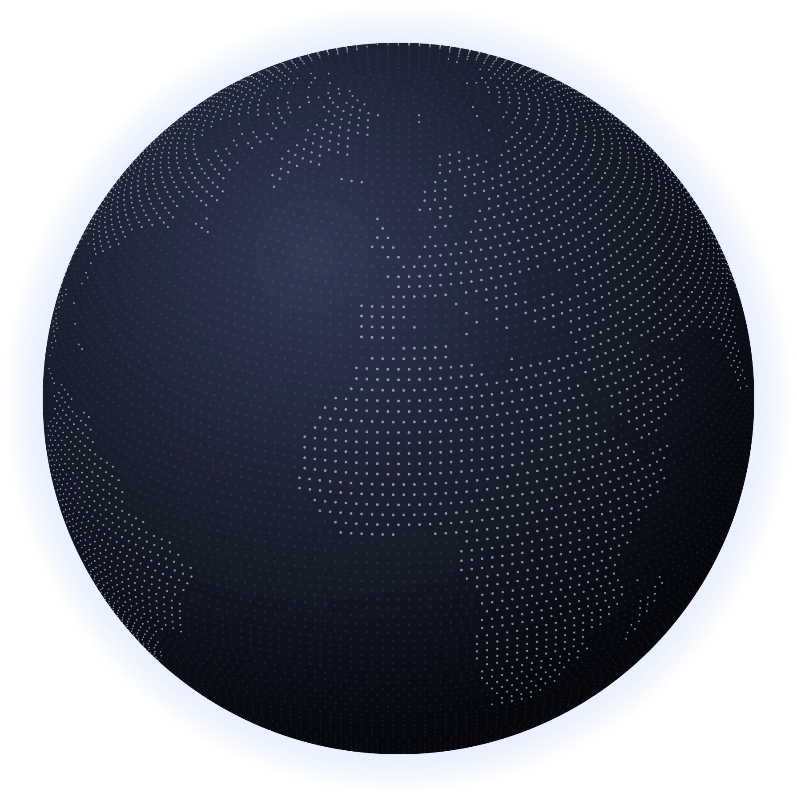

Write freely: a worry, a decision, a feeling you can't quite name. We'll find places in the world that echo it.
What you write here and while walking is sent to Claude through this study's server, and your session is saved for the research team.